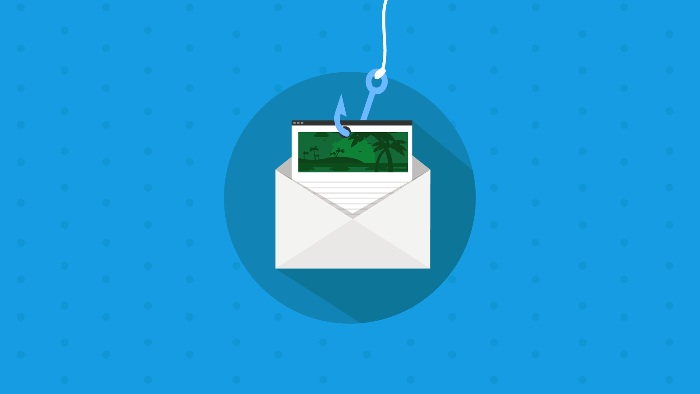
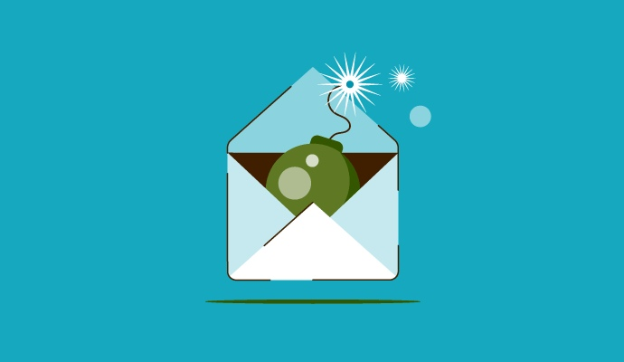

How To Stop Phishing Emails That Trick You Into Giving Away Personal Info
Phishing emails are emails that appear to be from a reputable company or person, but contain malicious content that could lead to your personal information being stolen. Phishing emails are becoming more and more common, so it's important to know how to spot them and stop them from happening. Here are some tips on how to stop phishing emails.
Some of the common techniques that phishers use to accomplish this and warning signs of a phishing email include:
- Lookalike Email Addresses: Phishers will often use an email address that looks like but is not quite the same as a legitimate, trusted one such as user@cornpany.com instead of user@company.com. Verify that an email address is correct before trusting an email.
- Misleading Links: In an email, the display text for a link does not have to be the same as the target of the link. Hover over a link with the mouse and verify that it goes to the right place before clicking it.
- Suspicious Attachments: Phishers will use email attachments to deliver malware to their targets. If an attachment is unnecessary, the wrong file type (like a ZIP file claiming to be an invoice), or a Microsoft Office document that requires macros, then it’s probably malware.
- Spelling and Grammar: Phishing emails commonly contain spelling mistakes and grammatical errors. If an email sounds wrong or doesn’t match the alleged sender’s voice, then it’s probably a scam.

Phishing emails are designed to use trickery and to convince the recipient to do something. As a general rule, If the request in an email seems odd or potentially dangerous, then be cautious of it.
Email Phishing Examples
Phishing emails come in many different forms, but some campaigns are more common than others. Some of the most common types of phishing emails include:
- Account Issues: These phishing emails will claim to be from companies like Netflix, Amazon, or Apple. The email says that there is an issue with an account that requires the user to login into a phishing page that harvests account credentials.
- Fake Invoices: Phishing emails targeting businesses may claim to be unpaid invoices from a vendor or supplier. These emails are designed to look like legitimate payment requests but any payments made go to an attacker.
- Business Email Compromise: BEC attackers impersonate authority figures, such as CEOs or managers, and are designed to steal money or sensitive data. These emails may instruct the recipient to send a payment to seal a deal or send sensitive internal data to the “CEO”.
What to Do if You Suspect a Phishing Attack
The impact and cost of a phishing attack on an organization depend on the speed and correctness of its response. If you suspect that an email may be a phishing email, take the following steps:
- Don’t Reply, Click Links, or Open Attachments: Never do what a phisher wants. If there is a suspicious link, attachment, or request for a reply don’t click, open, or send it.
- Report the Email to IT or Security Team: Phishing attacks are commonly part of distributed campaigns, and just because you caught the scam doesn’t mean that everyone did. Report the email to IT or the security team so that they can start an investigation and perform damage control as quickly as possible.
- Delete the Suspicious Email: After reporting, delete the suspicious email from your Inbox. This lessens the chance that you’ll accidentally click on it without realizing it later.

How to Protect Against Phishing Emails
Phishing emails are one of the most common types of cyberattacks because they are effective and easy to perform. While awareness of common phishing tactics and knowledge of anti-phishing best practices is important, modern phishing attacks are sophisticated enough that some will always slip through.
Phishing awareness training should be supplemented with anti-phishing solutions that can help to detect and block attempted phishing campaigns. Check Point Harmony Email & Office provides visibility and protection across email phishing techniques. To learn more about protecting your organization against phishing emails, you’re welcome to request a free demo.
In summary, clicking on links in emails you use daily is tempting. But, it's important to keep your guard up, as cybercriminals are always looking for ways to trick you into compromising your information or infecting your computer.